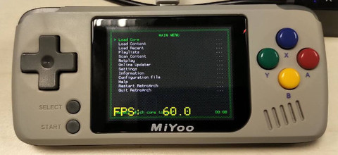
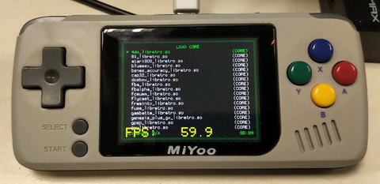
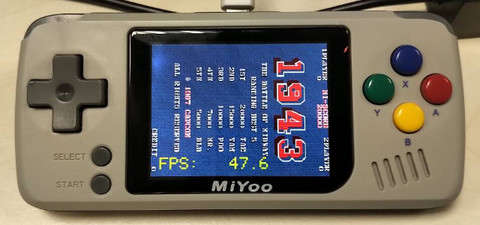

參考資訊：
https://github.com/RetroPie/RetroPie-Setup/wiki
步驟如下：
$ export PATH=$PATH:/opt/miyoo/bin
$ export TARGETMACH=arm-linux
$ export BUILDMACH=i686-pc-linux-gnu
$ export CROSS=arm-linux
$ export CC=${CROSS}-gcc
$ export LD=${CROSS}-ld
$ export AS=${CROSS}-as
$ export CXX=${CROSS}-g++
$ cd
$ git clone https://github.com/libretro/RetroArch
$ cd RetroArch
$ ./fetch-submodules.sh
$ PKG_CONF_PATH=/opt/miyoo/bin/pkg-config ./configure \
--disable-ffmpeg \
--disable-cg \
--disable-pulse \
--disable-jack \
--disable-x11 \
--disable-sdl2 \
--disable-egl \
--enable-sdl \
--disable-v4l2 \
--disable-wayland \
--disable-discord \
--disable-opengl1 \
--disable-videocore \
--disable-mali_fbdev \
--disable-opengl_core
$ vim config.mk +8
LIBRARY_DIRS = -L/opt/miyoo/arm-miyoo-linux-uclibcgnueabi/sysroot/usr/lib
$ make
完成


